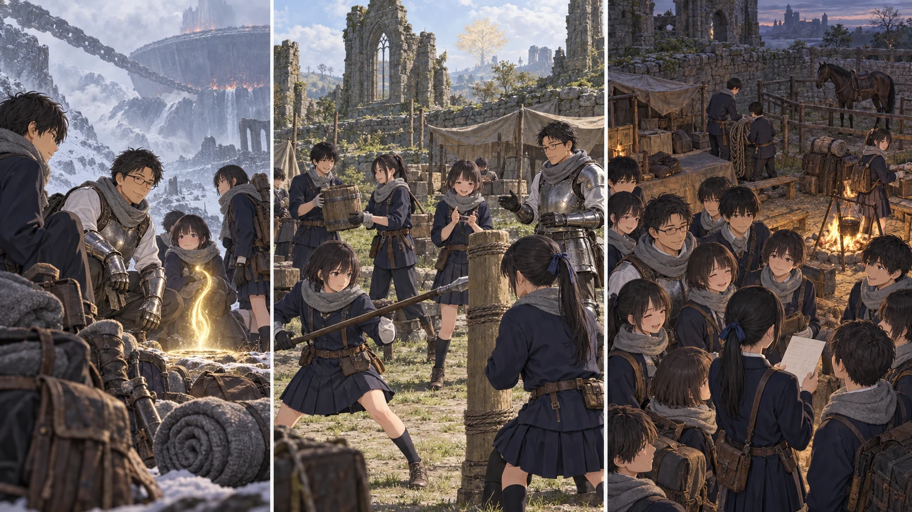

DAY79 / TURN1−89
約束した日に、帰ってくる。

結衣「お帰りなさい。次は、こっちの報告です」
【DAY79｜火の釜の麓】朝になっても、釜は昨日と同じ大きさで空を塞いでいた。先生は霧へ向かう道を見た。あそこへ行けば、今日中に戦いを始めることはできる。終えられるかどうかは分からない。布を巻き直し、最後に周囲の静けさを確かめた。「帰ろう」。十三人が祝福のそばへ集まる。
戦闘は起きていない。全員がこの場所へ実際に到達し、移動先として登録してある。先生はそのことを確かめてから、行き先にエレの教会を選んだ。三日分の雪道を、帰り道としてもう一度歩く必要はなかった。最後に見えた白い息が、教会の暖かな空気の中で消えた。
【結衣の朝】結衣は入口の補修箇所を見ていた。石は動いていない。昨日書いた線からずれていないことを確かめ、屋内へ戻ろうとした時、祝福の側に人影が増えた。灰色の布、濡れた靴、大きすぎる武器。帰ってきた、と言う前に、いつもの数え方が始まった。
先生、直人、陽太。花の横に紬。大地の金の刃の後ろから、悠が顔を出す。最後の一人まで見つけてから、結衣はようやく肩の力を抜いた。「お帰りなさい。次は、こっちの報告です」。出発前に練習した言い方より、少しだけ早口になった。
【留守の四日間】先生は荷物を下ろす前に、結衣の報告を聞いた。第3チームは毎日、既知の狩場と取水路へ出た。教会の十四人は見張り、食事、道具の手入れを交代した。大きな事故はない。だから何もしていなかった、という報告にはならない。凛の帳面にも、雫の水の記録にも、毎日の線が増えていた。
美咲と澪は軍馬の様子を伝えた。世話をする人の手は受け入れている。引いて歩ける範囲も、急に広げてはいない。先生は柵へ行き、馬の鼻先へ手を差し出した。帰ってきた匂いを嗅がせるだけにする。今度の巨人戦へ連れていける、と決める材料はまだ足りなかった。
結衣は預かっていた袋を持ってきた。「残してあります」。千七百四十ルーン。先生たちは道中で、それを使い込んでいない。先生が受け取り、今度は残っていた二十人を呼んだ。約束の後半を果たす番だった。
【第3チーム23／基地14人17】翼たち六人をレベル二十三へ。教会の十四人を十七へ。生命力と持久力を補い、昨日と同じ荷を持っても、昨日より余裕を残せる身体へ変える。盾を扱う者だけが前へ出るのではない。桶を運ぶ手、負傷者を支える肩、夜の見張りで立ち続ける足にも、その余裕が要る。
颯は祝福から立つと、左の鎖骨のあたりへ手をやった。布の下に残る傷は、レベルが増えても消えない。先生はその仕草を見たが、今日の訓練に前衛として加わるようには言わなかった。颯の方から、点呼の札を指した。「それ、奥にも持っていきます」。先生は頼んだ。今ここでできる仕事を、自分で選ぶ声だった。
結衣は盾を持ち、健太の前へ立った。竜爪の盾で押されたら敵わない。今日は力比べではなく、後ろへ下がる時に隣の者の足を踏まない練習をした。踏み出す方向を一声で伝える。健太が頷き、場所を空ける。教会の床で転ばずにできることを、暗闇でもできるようにする。
【第3チーム｜2d6＝6・2＋4＝12】育成の後、翼たちは日中のうちに既知の範囲へ出た。遠征に出るのでなく、明日の夜に外へ出ずに済むようにするためだ。三頭分の獲物を持ち帰り、航は使った六本の矢を記録した。凛が荷を下ろす頃には、主力の生徒たちも保存食の仕分けを手伝っていた。
陸が重い荷を持ち上げると、真央がその腰の大剣を見た。「変わったんだ」。陸は頷き、直人の方を一度見た。「使い方も、少し」。雪山で何を倒したかを話すより先に、狭い場所では剣を引かなければ後ろが通れない、と説明し始めた。真央は笑わず、自分の盾を置く位置を少し変えた。
【残り二十日の地図】地図には、ロルド、氷結湖、火の釜の麓まで、実際に歩いた線が一本繋がった。新しく開いた祝福は三つ。そこを使えるのは到達した主力十三人で、教会に残った二十人をいきなり雪山へ送ることはできない。先生は、皆が知っておくべき違いとして説明した。
八十日目を赤月への対処に使い、八十一日目から巨人戦へ戻る。巨人と釜に三日、次の地へ六日。九十日目の赤月を挟み、終盤の戦いへ進む。九十七日目から九十九日目までを遅れと救援のために残す。それは、勝てる日付を予言した表ではない。一戦が延びれば、どこが足りなくなるかを皆で見るための表だった。
「ここも、弓で囲めば？」。地図の釜を指して、誰かが聞いた。先生は先読みの記録を開く。足を狙う戦い。広い炎。転がって間合いを変える巨体。前の騎士と同じ形で、一人が注意を引き続けられるとは限らない。「近くへ入る人と、離れて見る人を決め直す。まず明日の夜を越えてから」。新しく持ち帰った聖杯の雫も、次の補給で確かめる品として机の端へ置いた。
日付の欄を見ていた結衣が、九十九の下へ線を引いた。百日目は使える予備日ではない。先生が黙って抱えていた時より、その線はずっと怖く見えた。それでも、ここにいる全員が同じ線を見ている。結衣は帳面を閉じ、先生へ渡した。「間に合わせるために、明日はここを守ります」。
夕方の空は曇っていた。赤い月はまだ出ていない。雨も降っていない。教会では濡らしたくない食料を奥へ寄せ、通路に荷を置かず、見張りの交代を確かめる。派手な砦にはなっていなくても、皆が何度も直してきた入口だった。先生は外側から石を押し、ぐらつかないのを確認して中へ戻った。
三十三人分の器が並んだ。残りは六百二十四ルーン、矢三百四十四本、食料百十三人分。遠征へ出る前より財布は軽い。代わりに皆の身体が強くなり、雪山の麓に戻れる光を持ち帰った。先生が最後の席へ座ると、結衣が点呼の欄を閉じた。約束した日に帰ってきた。その事実を、明日のために今日はちゃんと喜んだ。
今回の判定記録
抽選前の条件 · 抽選結果